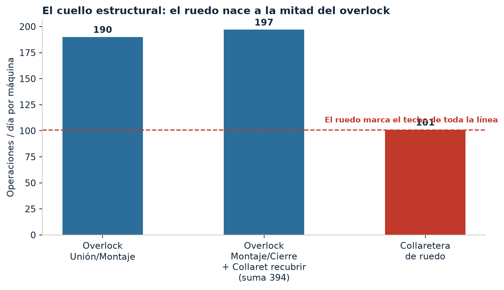
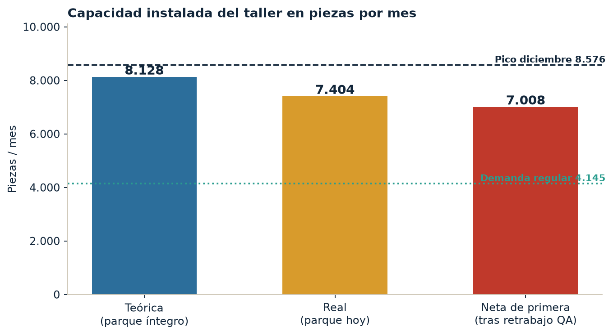
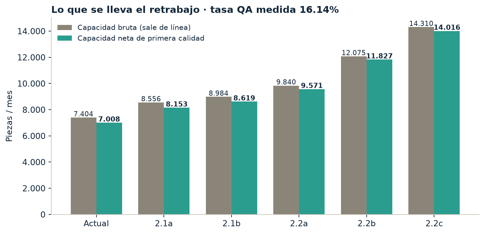
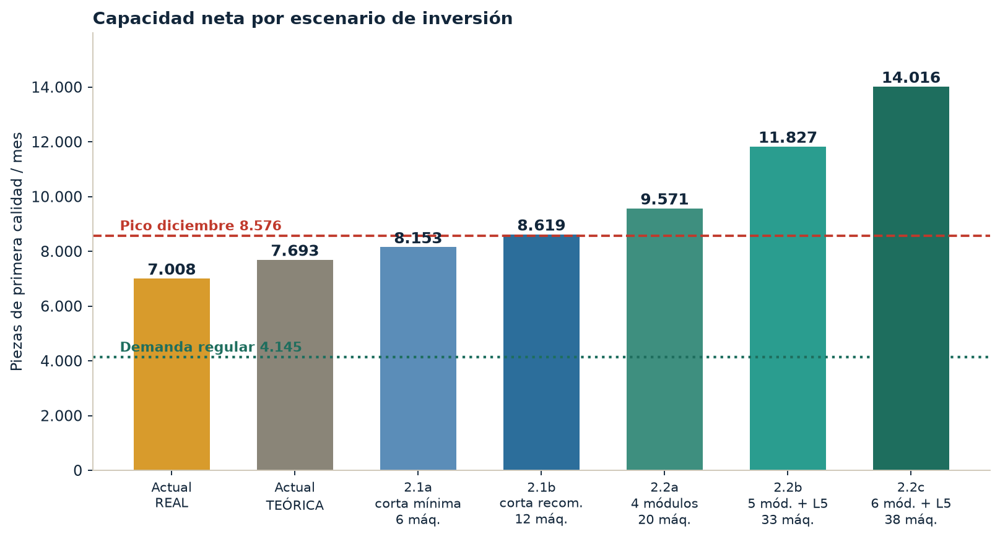
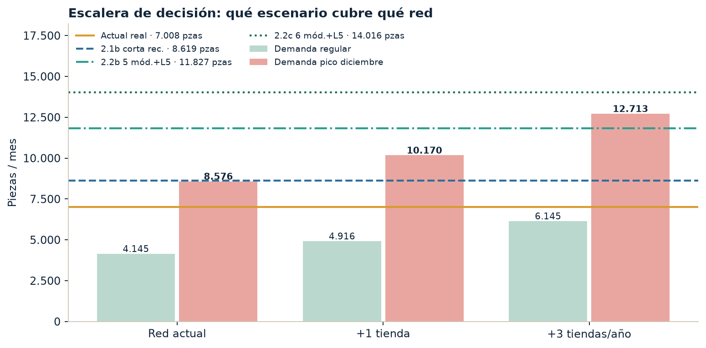
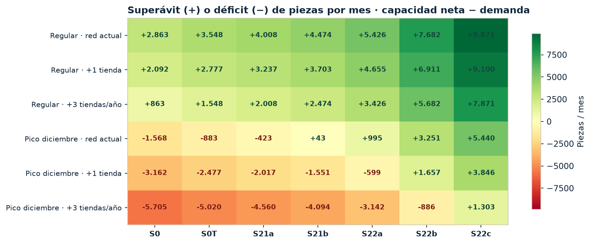
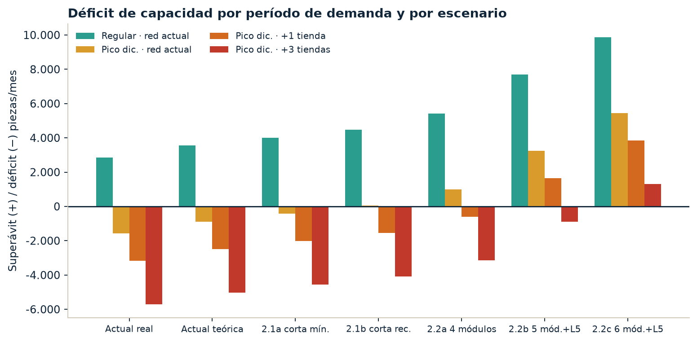
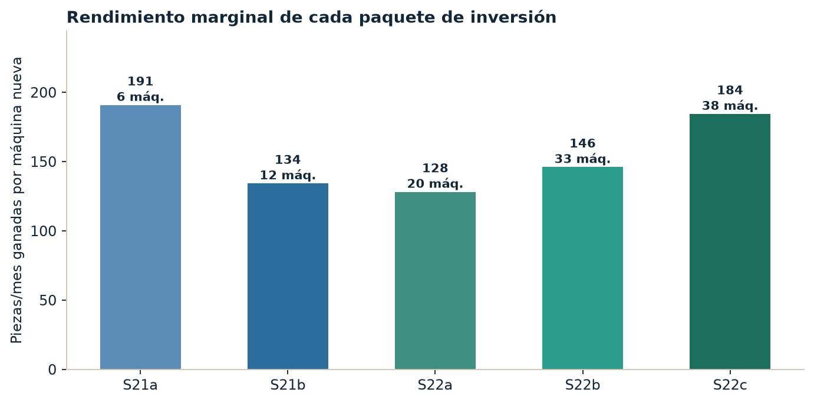

Techo actual teórico y real, dos configuraciones de línea con maquinaria nueva y el déficit contra la demanda regular, el pico de diciembre y la apertura de tiendas. Toda la capacidad está expresada en piezas por mes.
El taller cubre la demanda regular con holgura y no cubre diciembre. Ese es el hallazgo central, y no se resuelve reparando lo que está roto: repararlo todo deja el pico todavía corto. La pregunta que Gerencia debe responder no es «¿compramos máquinas?», sino ¿para qué red dimensionamos el taller?
El techo teórico no alcanza el pico. Aunque mañana volvieran a producir las cuatro máquinas caídas o parciales, el taller llegaría a 7.693 piezas contra una demanda de diciembre de 8.576. Seguirían faltando 883 piezas. Reparar no es una alternativa a comprar: es el punto de partida.
| Propuesta | Máquinas nuevas | Piezas/mes de primera |
Δ vs hoy | ¿Cubre diciembre de la red actual? |
¿Cubre diciembre con tiendas nuevas? |
|---|---|---|---|---|---|
| Hoy · sin inversión | 0 | 7.008 | — | No · −1.568 | No |
| 2.1a · Inversión corta mínima | 6 | 8.153 | +1.145 | Casi · −423 | No |
| 2.1b · Inversión corta recomendada | 12 | 8.619 | +1.611 | Sí · +43 | No · −1.551 |
| 2.2a · Ambiciosa · 4 módulos | 20 | 9.571 | +2.563 | Sí · +995 | Casi · −599 |
| 2.2b · Ambiciosa · 5 módulos + shorts | 33 | 11.827 | +4.819 | Sí · +3.251 | Sí, 1 tienda · +1.657 |
| 2.2c · Ambiciosa · 6 módulos + shorts | 38 | 14.016 | +7.008 | Sí · +5.440 | Sí, 3 tiendas · +1.303 |
Recomendación. Aprobar 2.1b (12 máquinas) como piso irrenunciable: es lo mínimo que cubre el diciembre de la red que ya existe, y es el paquete con mejor rendimiento por máquina de los que cierran el pico. Aprobar en el mismo acto la cotización de 2.2b, porque la tienda confirmada de este año deja a 2.1b en déficit de 1.551 piezas en su primer diciembre. Comprar 2.1b y abrir la tienda sin 2.2b es repetir este informe en doce meses.
Guion de 10 minutos para la sesión.
El expediente venía midiendo la capacidad en operaciones por día: 2.940 teóricas, 2.649 reales. Es la unidad correcta para el taller y resolvió una discusión real entre Operaciones y Gerencia. Pero para decidir una compra hay que traducirla, porque una operación no es una pieza y la conversión no es una división.
La tentación es dividir: 52.990 operaciones al mes entre 7,40 operaciones por pieza del mix da 7.161 piezas. Ese número está mal, y está mal al alza.
La diferencia son 657 piezas al mes que el taller no puede entregar. Sumar las operaciones de todas las máquinas supone que la capacidad es intercambiable: que las operaciones libres del overlock pueden hacer el trabajo del ruedo. No pueden. Una línea produce al ritmo de su estación más lenta, y el resto de las máquinas quedan esperando. Ese es exactamente el WIP que hoy se acumula en las mesas de remate.
Este informe no divide operaciones. Parte de la tasa de producción medida en campo, que ya viene en piezas y ya incorpora el cuello de botella de la línea.
| Paso | Qué se hace | Por qué |
|---|---|---|
| 1 | Se fija el mix de planificación: MAR 50%, RIO 35%, Basic Line 15%, con 7, 6 y 12 operaciones por pieza. | MAR, RIO y Basic no cuestan lo mismo. Planificar sobre un promedio plano garantiza incumplir. |
| 2 | Se toma la tasa de piezas por línea y por día medida en campo, para tres estados técnicos del parque. | Es una observación directa en la unidad que Gerencia pide, no una derivación. |
| 3 | Tasa al mix = 0,50·MAR + 0,35·RIO + 0,15·Basic. | Convierte tres tasas en una sola cifra comparable mes a mes. |
| 4 | Capacidad mensual = tasa al mix × 20 días × número de líneas. | Mismo criterio de 20 días hábiles que ya usa Gerencia de Operaciones. |
| 5 | Se descuenta el retrabajo con el factor 1 ÷ (1 + tasa de reproceso × contenido de retrabajo). | La prenda que vuelve a la línea ocupa máquina y gente, y no es una pieza nueva. |
| 6 | Déficit = demanda − capacidad neta de primera calidad. | La venta se hace con piezas vendibles, no con piezas que salen de línea. |
Toda la comparación de escenarios se apoya en tres tasas medidas, una por estado del parque. Son el corazón del modelo y conviene que Gerencia las reconozca:
| Modelo | Ops por pieza | Peso en el mix |
A · Parque actual (pzas/línea/día) |
B · Parque íntegro o JACK K7 |
C · Módulo continuo |
C vs A |
|---|---|---|---|---|---|---|
| MAR | 7 | 50% | 95 | 105 | 130 | +36,8% |
| RIO | 6 | 35% | 73 | 82 | 101 | +38,4% |
| Basic Line | 12 | 15% | 55 | 61 | 76 | +38,2% |
| MIX PONDERADO | 7,40 | 100% | 81,30 | 90,35 | 111,75 | +37,5% |
Validación cruzada. El modelo en piezas y el tablero en operaciones dicen lo mismo por caminos distintos, y eso es la mejor garantía de que ninguno está inventado:
Las cuatro máquinas que fallan no están repartidas al azar: tres de las cuatro son collareteras de ruedo, y el ruedo es precisamente la estación más lenta de la línea.
| Línea | Máquina | Estatus | Teórica ops/día | Real ops/día | Pérdida |
|---|---|---|---|---|---|
| Línea 3 | Collaretera de ruedo 1 | Parcial 50% | 101 | 50,5 | 50,5 |
| Línea 3 | Collaretera de ruedo 2 | Inactiva | 100 | 0 | 100 |
| Línea 4 | Collaretera de ruedo 2 | Inactiva | 100 | 0 | 100 |
| Línea 2 | Overlock Unión/Montaje | Parcial 80% | 190 | 150 | 40 |
| Total de la pérdida | 491 | 200,5 | 290,5 | ||

| Línea | Teórica ops/día | Real ops/día |
Pérdida | Utilización | Diagnóstico |
|---|---|---|---|---|---|
| Línea 1 | 685 | 685 | 0 | 100% | Sana. Prueba de que el 100% es alcanzable. Un solo ruedo por diseño. |
| Línea 2 | 685 | 645 | 40 | 94% | Overlock de unión al 80%. Un solo ruedo por diseño. |
| Línea 3 | 785 | 634,5 | 150,5 | 81% | La peor. Concentra el 52% de toda la pérdida del taller: ruedo 1 al 50% y ruedo 2 apagado. |
| Línea 4 | 785 | 685 | 100 | 87% | Ruedo 2 apagado. Promete 785 y entrega lo mismo que una línea de 4 máquinas. |
| Total L1–L4 | 2.940 | 2.649,5 | 290,5 | 90,1% |
Léase con cuidado el desbalanceo. Líneas 1 y 2 nacieron con un solo ruedo; líneas 3 y 4 se diseñaron con dos para equilibrar el overlock, y por eso prometen 785 en lugar de 685. Pero los dos segundos ruedos están apagados. El resultado es que L3 y L4 tienen overlock de línea grande y ruedo de línea chica: la promesa de 785 nunca se cumplió ni un solo día, y entre estaciones se acumula el WIP.
| Bloque | Teórica pzas/mes | Real pzas/mes |
Pérdida | Base de cálculo |
|---|---|---|---|---|
| Líneas 1–4 · tejido de punto | 7.228 | 6.504 | 724 | 90,35 y 81,30 pzas/línea/día × 20 días × 4 líneas |
| Línea de shorts y pants | 900 | 900 | 0 | 45 pzas/día × 20 días · muestra de campo, sin medición formal |
| TALLER COMPLETO · bruto | 8.128 | 7.404 | 724 | Piezas que salen de línea |
| Descuento por retrabajo QA (16,14%) | −435 | −396 | — | Factor neto 0,9465 |
| TALLER COMPLETO · neto de primera | 7.693 | 7.008 | 685 | Piezas vendibles |

Lo que cuesta el estado del parque, en piezas. 685 piezas de primera calidad al mes. En un diciembre son 685 prendas que no llegan a tienda en el mes que más pesa en caja. Sobre la demanda regular no se nota, porque hay holgura; sobre el pico es exactamente el 44% del hueco total.
Esta es la parte del informe que el expediente anterior no podía cerrar: había mecanismo de defecto documentado, pero no había tasa. Ahora la hay, y cambia la conversación. Dieciséis de cada cien prendas vuelven a ocupar máquina y operaria, y esa capacidad no produce ninguna pieza nueva.
El 0,35 es el contenido de retrabajo: la fracción del contenido de operación original que consume una prenda retrabajada. Es un supuesto, y está declarado como tal. Se apoya en que los defectos documentados se concentran en el acabado —ruedo abierto, remate manual, limpieza de hilo, lavado por manchas de aceite— y no exigen rehacer la prenda completa. El apartado 10 muestra qué pasa si ese número es 20%, 50% o 100%: el orden de los escenarios no cambia; cambia el tamaño del déficit.
Los siete defectos que Producción documentó son, uno por uno, atribuibles a la condición del parque, no al método ni al operario:
| Defecto | Causa en la máquina actual | Qué lo elimina en la máquina nueva |
|---|---|---|
| Costura ondulada o estirada | Transporte diferencial desgastado; crítico en Microfibra, BioFlow y fitness | Diferencial de precisión y motor servo |
| Ruedos abiertos | Remate manual deficiente | Remate automático |
| Hilos sueltos y limpieza de hilo | Sin corte ni succión: existe una etapa completa que no entra a ningún reporte | Corte y succión de hilo en la estación |
| Manchas de aceite | Lubricación no controlada; golpea Blanco, Aguamarina y Amarillo Pastel | Lubricación sellada |
| Cortes accidentales de tela | Tijera manual sobre la máquina | Corte integrado: la tijera sale de la línea |
| Puntadas saltadas y rotura de hilo | Desgaste de mecanismo y tensión inestable | Control electrónico de tensión |
| Fruncido en montaje de manga | Diferencial sin ajuste fino | Diferencial regulable |
Por eso los escenarios con parque nuevo se modelan con una tasa de reproceso residual del 6,0% en las líneas modernizadas, no con el 16,14% actual. Es un supuesto conservador: asume que sólo el 62% de los rechazos actuales se eliminan y que el 38% restante proviene de tela, corte, patrón o manipulación, que la máquina no corrige. En los escenarios donde sólo parte de las líneas se moderniza, la tasa se pondera por la fracción de días-línea con parque nuevo.

Objetivo: la máxima capacidad alcanzable sin construir líneas nuevas. Se compra sólo donde el peso marginal es mayor —la estación de ruedo— y se aprovecha que las líneas 3 y 4 ya tienen cinco posiciones físicas instaladas. Convertirlas en módulo continuo es el camino más corto y más barato al techo C, porque no hay que crear la posición: hay que llenarla con máquina que funcione.
| Ítem | Detalle | Máquinas | Problema que ataca |
|---|---|---|---|
| Módulo continuo para Línea 3 | Overlock de unión, overlock de cierre, collaretera de recubrir, collaretera de ruedo con corte y succión, recta dedicada | 5 | L3 concentra el 52% de la pérdida. Ruedo 1 al 50% y ruedo 2 apagado. |
| Overlock de unión para Línea 2 | Sustituye la máquina que trabaja al 80% | 1 | Recupera 40 operaciones/día y la calidad de la unión de hombros y costados. |
| Recuperar el ruedo 2 de Línea 4 | Con kit de repuestos, sin compra de máquina | 0 | Devuelve L4 a su patrón de diseño de dos ruedos. |
| Reactivar los 2 overlock de cuellos | Sin compra · requiere 2 operarios | 0 | Hoy están parados por personal, no por máquina. Libera la operación de montar cuello, que hoy carga los overlock de línea. |
| Kit de repuestos y contrato de suministro local | Agujas, cuchillas, diferenciales, loopers, con política mín-máx | 0 | Tres equipos llevan meses esperando piezas: ≈40 piezas/día perdidas. |
| Total 2.1a | 6 | Resultado: L3 en módulo continuo; L1, L2 y L4 en techo de diseño. | |
2.1a no cierra el pico. Queda a 423 piezas de la demanda de diciembre. Es la mejor relación piezas-por-máquina de todo el informe (191 piezas/mes por cada máquina comprada), pero se queda corta justo en el mes que motiva la inversión. Sirve como fase de arranque si hay restricción de caja; no sirve como respuesta a Gerencia.
Añade sobre 2.1a lo que falta para que ninguna línea quede con la estación de ruedo como techo:
| Ítem | Detalle | Máquinas | Problema que ataca |
|---|---|---|---|
| Todo lo de 2.1a | |||
| Módulo continuo para Línea 3 | 5 máquinas | 5 | Ver 2.1a |
| Overlock de unión para Línea 2 | Sustitución | 1 | Ver 2.1a |
| Lo que agrega 2.1b | |||
| Módulo continuo para Línea 4 | Igual que L3: cinco posiciones con máquina nueva | 5 | L4 arrastra el mismo desbalanceo que L3. Ya tiene las cinco posiciones instaladas. |
| Collaretera de ruedo para Línea 1 y Línea 2 | Segundo ruedo por línea, con corte y succión de hilo | 2 | L1 y L2 nacen con un solo ruedo, a la mitad del overlock. Replica el patrón de diseño que L3 y L4 ya tienen. |
| Total 2.1b | 12 | Resultado: L3 y L4 en módulo continuo; L1 y L2 en techo de diseño con ruedo balanceado. | |
2.1b es el piso irrenunciable. Con 12 máquinas el taller pasa a cubrir el diciembre de la red que ya existe: 8.619 piezas de primera contra 8.576 de demanda. El margen es de 43 piezas —medio día de producción—, así que hay que leerlo como «empata», no como «sobra». Cualquier avería, corporativo o modelo complejo no previsto vuelve a abrir el hueco.
Condición no negociable de la Fase 2.1. Las dos máquinas de overlock de cuellos están paradas por falta de operarios, no por avería. Comprar hierro sin cerrar el headcount reproduce ese caso: máquina nueva, capacidad cero. El acta de inversión debe incluir la dotación de las posiciones, o el resultado será menor que el proyectado.
Objetivo: dejar de reparar el techo y comprar crecimiento. Las tres configuraciones son una escalera: cada peldaño cubre una red comercial distinta. Elegir peldaño es una decisión de Comercial tanto como de Taller, porque lo que se dimensiona es el diciembre de la red que se va a tener, no el de la que se tiene.
| Config. | Qué se construye | Máquinas nuevas |
Bruto pzas/mes | Neto pzas/mes | Δ vs hoy |
|---|---|---|---|---|---|
| 2.2a | Las 4 líneas de punto en módulo continuo de 5 máquinas. Cierra el estándar de calidad y de flujo en todo el taller: desaparecen las mesas de remate y la etapa de limpieza de hilo. | 20 | 9.840 | 9.571 | +2.563 |
| 2.2b | 2.2a + una 5ª línea de punto en módulo continuo + la línea de shorts y pants completada y renovada (ojaladora, presilladora, engomadora, doble aguja, 2 rectas, 2 overlock). | 33 | 12.075 | 11.827 | +4.819 |
| 2.2c | 2.2b + una 6ª línea de punto en módulo continuo. Dimensionado explícitamente para el objetivo de tres tiendas nuevas por año, en mes pico. | 38 | 14.310 | 14.016 | +7.008 |

La línea de shorts y pants es el punto ciego del expediente. Hoy aparece en el conteo de máquinas, produce, y no tiene techo medido: la única referencia es una muestra de campo de 45 piezas/día. Y lo que corre por ahí es lo más caro del catálogo en operaciones:
| Producto | Operaciones por pieza | Máquinas que exige | Estado del dato |
|---|---|---|---|
| Short R1 — Externo | 17 | Recta (4), Overlock (7), Collaretera, Engomadora, Presilladora, Presilla | Ficha completa |
| Short Sport | 15 | Recta (3), Overlock (6), Doble aguja (2), Ojaladora, Engomadora, Presilladora | Ficha completa |
| Short R1 — Interno | 13 | Collaretera (7), Recta, Overlock (4), Presilladora | Ficha completa |
| Explore Pants | s/d | Probable ojal, presilla y engomado | Celda vacía |
| Jacket 2.0 | s/d | Sin ficha de secuencia cargada | Celda vacía |
Un short de 17 operaciones cuesta 2,8 veces lo que un RIO de 6. Mientras no haya techo medido para esa línea, cualquier orden de shorts entra al taller sin cupo asignado y desplaza producción de punto sin que nadie lo vea en el tablero. Por eso 2.2b la incluye, y por eso el apartado 10 pide su medición como dato P1: es capacidad que existe y no se administra.
Las tres configuraciones liberan máquina. Dos collareteras son chatarra —el 9% del parque, que hoy se deprecia sin producir un segundo de valor— y a ellas se suman las sustituidas. La secuencia es: inventario a nivel de serie con valor en libros, canibalizar lo que la marca nueva no cubra, vender el resto y abatir el CAPEX con esa caja. Sin este paso el taller financia máquina nueva y además conserva y mantiene la vieja.
| Escenario de demanda | Piezas/mes | vs regular | Origen del dato |
|---|---|---|---|
| Regular · red actual | 4.145 | 1,00× | Dato de Gerencia |
| Regular · +1 tienda | 4.916 | 1,19× | Factor 1,1859 derivado de los escenarios de red del expediente |
| Regular · +3 tiendas/año | 6.145 | 1,48× | Factor 1,4824, ídem |
| Pico diciembre · red actual | 8.576 | 2,07× | Dato de Gerencia |
| Pico diciembre · +1 tienda | 10.170 | 2,45× | 8.576 × 1,1859 |
| Pico diciembre · +3 tiendas/año | 12.713 | 3,07× | 8.576 × 1,4824 |
Los factores de red se derivaron de los escenarios en operaciones que ya estaban en el expediente (58.800 → 69.732 con una tienda → 87.166 con tres al año), de modo que este informe no introduce un supuesto comercial nuevo: reutiliza el que ya se presentó. La Grieta se usa como ancla ≈20% del pico de la red. Son escenarios, no forecast firmado por Comercial.
La estacionalidad es el problema, no el promedio. El pico de diciembre es 2,07 veces la demanda regular. Un taller dimensionado al promedio anual está sobredimensionado once meses y quebrado en el mes que decide el año. Los tableros de producto lo confirman colección por colección: entre 1,5× y 2,5× el mes anterior.
Conviene decirlo sin adornos porque le da credibilidad al resto del informe: en período regular el taller no tiene un problema de capacidad. Cubre 4.145 piezas con 1,69× de holgura, y seguiría cubriendo incluso con tres tiendas nuevas encima (6.145 piezas, cobertura 1,14×). Si la justificación de la compra se planteara sobre el mes promedio, no habría justificación.
Dos advertencias sobre esa holgura, que Operaciones ya señaló:
La cifra más clara para la sesión de directiva es la de los días. Al ritmo neto actual —350 piezas de primera por día— diciembre exige 24,5 días hábiles de taller. El mes tiene 20. Faltan cuatro días y medio de producción que el calendario no tiene, y ninguna gestión de turnos, horas extra o prioridades los inventa.
Y hay un segundo hecho que cierra la discusión sobre si basta con mantenimiento: con las 22 máquinas al 100% el taller llegaría a 7.693 piezas. Seguirían faltando 883. El techo teórico del layout actual está por debajo de la demanda de diciembre. Es un problema de configuración de líneas, no de estado de máquina.

| Red | Pico pzas/mes |
Hoy 7.008 | 2.1b 8.619 |
2.2a 9.571 | 2.2b 11.827 | 2.2c 14.016 |
|---|---|---|---|---|---|---|
| Red actual | 8.576 | −1.568 | +43 | +995 | +3.251 | +5.440 |
| +1 tienda (tipo La Grieta) | 10.170 | −3.162 | −1.551 | −599 | +1.657 | +3.846 |
| +3 tiendas/año (objetivo declarado) | 12.713 | −5.705 | −4.094 | −3.142 | −886 | +1.303 |
Consecuencia directa para la decisión. Una sola tienda nueva consume 1.594 piezas del pico, más que todo lo que aporta reparar el parque completo (685). Si la tienda confirmada de este año abre y sólo se aprobó 2.1b, el primer diciembre de esa tienda arranca con un déficit de 1.551 piezas. Abrir local y no tener prenda quema el evento comercial: la inversión de la tienda se paga con producto, no con la vitrina.


Cobertura = capacidad neta ÷ demanda. Por debajo de 1,00 no se cubre.
| Escenario de demanda | Pzas/mes | Hoy | Teórico | 2.1a | 2.1b | 2.2a | 2.2b | 2.2c |
|---|---|---|---|---|---|---|---|---|
| Regular · red actual | 4.145 | 1,69 | 1,86 | 1,97 | 2,08 | 2,31 | 2,85 | 3,38 |
| Regular · +1 tienda | 4.916 | 1,43 | 1,56 | 1,66 | 1,75 | 1,95 | 2,41 | 2,85 |
| Regular · +3 tiendas/año | 6.145 | 1,14 | 1,25 | 1,33 | 1,40 | 1,56 | 1,92 | 2,28 |
| Pico diciembre · red actual | 8.576 | 0,82 | 0,90 | 0,95 | 1,01 | 1,12 | 1,38 | 1,63 |
| Pico diciembre · +1 tienda | 10.170 | 0,69 | 0,76 | 0,80 | 0,85 | 0,94 | 1,16 | 1,38 |
| Pico diciembre · +3 tiendas/año | 12.713 | 0,55 | 0,61 | 0,64 | 0,68 | 0,75 | 0,93 | 1,10 |
Sin cotización no hay payback en dólares. Lo que sí se puede calcular hoy, y es la mejor aproximación disponible a la eficiencia del capex, es cuántas piezas de primera al mes aporta cada máquina nueva.

| Escenario | Máquinas | Piezas/mes ganadas |
Piezas por máquina | Lectura |
|---|---|---|---|---|
| 2.1a · corta mínima | 6 | 1.145 | 191 | El mejor rendimiento del informe: ataca la estación exacta que limita la línea. No cierra el pico. |
| 2.1b · corta recomendada | 12 | 1.611 | 134 | Rendimiento menor porque las 2 collareteras de L1 y L2 compran balanceo, no ritmo. Es el primer escenario que cubre diciembre. |
| 2.2a · 4 módulos | 20 | 2.563 | 128 | El punto más bajo: modernizar L1 y L2, que ya estaban sanas, rinde menos por máquina. Compra calidad y flujo homogéneo. |
| 2.2b · 5 módulos + shorts | 33 | 4.819 | 146 | El rendimiento vuelve a subir: la línea nueva nace en módulo continuo y la de shorts sale del punto ciego. |
| 2.2c · 6 módulos + shorts | 38 | 7.008 | 184 | Duplica la capacidad del taller. Casi tan eficiente por máquina como 2.1a, y es el único que cubre 3 tiendas en pico. |
Advertencia sobre esta métrica. Piezas por máquina mide eficiencia técnica, no valor económico. Falta el precio de cada tipo de máquina —una ojaladora y una collaretera no cuestan lo mismo— y falta el margen bruto por pieza. Con esos dos datos, esta tabla se convierte en payback y deja de ser un indicador auxiliar. Ambos están en la lista P0 del apartado 10.
| Fase | Qué se aprueba ahora | Qué no se pide todavía |
|---|---|---|
| Fase 1 — Cerrar el pico de hoy | Compra de las 12 máquinas de 2.1b: módulos continuos para L3 y L4, overlock de unión para L2, segunda collaretera de ruedo para L1 y L2. Más el kit de repuestos con contrato de suministro local y la dotación de 2 operarios para los overlock de cuellos. | El monto. Falta cotización por tipo de máquina. |
| Fase 2 — Comprar la red nueva | Cotizar 2.2b (33 máquinas) y presentarla junto al plan de aperturas de Comercial. La condición de apertura de la tienda confirmada es que 2.2b esté aprobada, no sólo cotizada. | Aprobar el capex de 2.2b a ciegas. Necesita cotización, layout y plan de dotación. |
| Paralelo — Abatir el capex | Inventario del parque a nivel de serie con valor en libros y lote de salida de las 2 collareteras chatarra más las sustituidas. | Nada. Este paso no tiene dependencias y libera caja. |
| Elemento | Estado | Fuente o criterio |
|---|---|---|
| Capacidad por máquina y estatus del parque | Medido | Máquinas activas · Operaciones por línea · dashboard de capacidad |
| Tasas de piezas por línea y día (95/105/130 y equivalentes) | Medido | Muestra de campo · operaciones por línea |
| Operaciones por pieza de MAR, RIO, Basic y shorts | Medido | Operaciones por producto · fichas de secuencia |
| Tasa de reproceso 16,14% | Medido | Análisis de tasa de retrocesos QA · promedio abr–ago 2026 |
| Demanda regular 4.145 y pico 8.576 | Dado | Gerencia |
| Mix de planificación 50/35/15 | Declarado | Dashboard de capacidad. Conviene revalidarlo contra la venta real del año. |
| Contenido de retrabajo 35% | Supuesto | Los defectos se concentran en acabado. Sensibilidad en 10.2. Requiere dato P0. |
| Reproceso residual 6,0% con parque nuevo | Supuesto | Asume que se elimina el 62% de los rechazos. Justificación técnica de calidad. |
| Factores de red 1,1859 y 1,4824 | Escenario | Derivados de los escenarios de red del expediente. No es forecast de Comercial. |
| Capacidad de la línea de shorts, 45 pzas/día | Muestra única | Muestra de campo, sin estatus por máquina ni medición formal. |
| Capacidad individual de collaretera de recubrir y overlock de cierre | Suma conocida | Su suma es 394 ops/día. El detalle por máquina lo cierra el inventario de máquinas activas. |
El supuesto más discutible del modelo es el 35%. Esta tabla mueve ese número entre 20% y 100% —el extremo en que una prenda rechazada se rehace completa— y muestra la capacidad neta resultante:
| Contenido de retrabajo | Hoy | 2.1a | 2.1b | 2.2a | 2.2b | 2.2c | ¿Cambia la conclusión? |
|---|---|---|---|---|---|---|---|
| 20% | 7.172 | 8.321 | 8.772 | 9.685 | 11.932 | 14.140 | No. Hoy sigue por debajo del pico (−1.404). |
| 35% · caso central | 7.008 | 8.153 | 8.619 | 9.571 | 11.827 | 14.016 | — |
| 50% | 6.851 | 7.992 | 8.472 | 9.460 | 11.723 | 13.893 | No, pero 2.1b deja de cubrir el pico (−104). |
| 100% | 6.375 | 7.498 | 8.015 | 9.109 | 11.392 | 13.500 | No. Refuerza el caso: el déficit de hoy sube a −2.201. |
Conclusión de la sensibilidad. En todo el rango, el orden de los escenarios se mantiene y el diagnóstico no cambia: la demanda regular está cubierta y el pico no. Lo único que se mueve es el margen de 2.1b, que en el caso central empata el pico por 43 piezas y con un contenido de retrabajo del 50% pasa a un déficit de 104. Eso es un argumento adicional para no quedarse en 2.1b si la red va a crecer, y para cerrar cuanto antes el dato de minutos de retrabajo por prenda.
| Pri. | Dato | Para qué | Dueño | Estado hoy |
|---|---|---|---|---|
| P0 | Cotización por tipo de máquina, con flete, instalación y capacitación | Convierte las piezas ganadas en payback y monto de acta | Proveedor + Producción | No está |
| P0 | Reporte de máquinas 15-jul a 31-ago 2026: horas de parada por equipo | Sustituye la merma del 10% por disponibilidad medida (MTBF y MTTR) y valida el estatus parcial de cada máquina | Mantenimiento | Recolectado, no incorporado al modelo |
| P0 | Minutos de retrabajo por prenda y % de defectos atribuibles a máquina | Fija el factor neto, que hoy es el supuesto más sensible | Calidad / Taller | No medido |
| P0 | Margen bruto por pieza | Dolariza el déficit de 1.568 piezas del pico | Finanzas | No está |
| P1 | Inventario de máquinas a nivel de serie: marca, modelo, año, valor en libros | Cierra las dos estaciones sin capacidad publicada y dimensiona el lote de salida | Mantenimiento / Admin | Pendiente de cargar |
| P1 | Tasa de producción medida de la línea de shorts y pants | Hoy se usa una muestra única de 45 pzas/día para toda una línea | Taller | Muestra única |
| P1 | Plan comercial: qué tienda, cuándo y de qué tamaño | Pasa los escenarios de red a presupuesto y fija el peldaño de 2.2 | Comercial | 1 confirmada, objetivo 3/año, sin fecha ni tamaño |
| P1 | Operaciones por pieza de Explore Pants, Jacket 2.0 y Active Duo | El pico de 8.576 piezas puede estar subestimado en carga de máquina | Ingeniería | Celdas vacías |
| P2 | Headcount por línea contra el estándar de 5 máquinas por módulo | Sin operarios, la máquina nueva repite el caso de los overlock de cuellos | RR.HH. | 2 máquinas paradas por gente |
| P2 | Volumen, mix y SLA del taller satélite | Evita duplicar capacidad que ya está tercerizada | Operaciones | Mencionado, sin data |
Qué se puede afirmar hoy y qué no. Este informe sostiene el diagnóstico (el pico no se cubre, ni siquiera con el parque íntegro), el dimensionamiento en piezas de las dos propuestas y el orden de prioridad de la compra. No sostiene un monto, un payback ni un acta de inversión: para eso faltan los cuatro P0. La recomendación está formulada para poder aprobarse en concepto y volumen ahora, y cerrarse en dinero cuando llegue la cotización.
anexos/Modelo_Capacidad_Piezas_Cuadro.xlsx — memoria de cálculo
en 13 hojas: método, contraste con el método de operaciones, parque y cuello de botella, tasas
por estado, escenarios, desglose por modelo, demanda, déficit, cobertura, calidad y sensibilidad,
capacidad máxima exclusiva, paquete de compra y datos faltantes.modelo_capacidad.py — el modelo completo, ejecutable. Todos los
parámetros están en la cabecera del archivo con su fuente. Cambiar un supuesto y volver a correrlo
regenera el Excel, las figuras y el dashboard.dashboard_capacidad_piezas.html — versión interactiva para la
sesión, con selector de escenario y de período de demanda.anexos/figuras/ — las ocho figuras de este informe en PNG.Trazabilidad de las cifras.
Documento de decisión. No sustituye cotización ni acta de inversión. Todas las cifras de capacidad
en piezas se recalculan con modelo_capacidad.py; las validaciones cruzadas contra el
tablero en operaciones están en la hoja 02_Contraste_metodo del anexo.
Corte: septiembre 2026.